| Larch: X-ray Data Analysis |
XAFS: Post-edge Background Subtraction
XAFS: Reading and using Feff Paths
Fourier transforms are central to understanding and using XAFS. Consequently, many of the XAFS functions in Larch use XAFS Fourier transforms as part of their processing, and many of the functions parameters and arguments described here have names and meanings used throughout the XAFS functionality of Larch. For example, but autobk() and feffit() rely on XAFS Fourier transforms, and use the XAFS Fourier transform function described here.
The standard Fourier transform of a signal 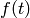 can be written as

where the symmetric normalization is one of the more common choices of
conventions. This gives conjugate variables of  and
and
 . Because XAFS goes as
. Because XAFS goes as
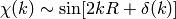
the conjugate variables in XAFS are generally taken to be  and
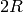. The normalization of
and
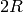. The normalization of  from a Fourier
transform of
from a Fourier
transform of  is a matter of convention, but we follow the
symmetric case above (with replaced by and
replaced by , and of course 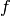 by
is a matter of convention, but we follow the
symmetric case above (with replaced by and
replaced by , and of course 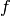 by
 ).
).
But there are two more important issues to mention. First, an XAFS Fourier
transform multiplies by a power of , 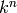
and by a window function  before doing the Fourier
transform. The power-law weighting allow the oscillations in to
emphasize different portions of the spectra, or to give a uniform intensity
to the oscillations. The window function acts to smooth the resulting
Fourier transform and remove ripple and ringing in it that would result
from a sudden truncation of at the end of the data range.
before doing the Fourier
transform. The power-law weighting allow the oscillations in to
emphasize different portions of the spectra, or to give a uniform intensity
to the oscillations. The window function acts to smooth the resulting
Fourier transform and remove ripple and ringing in it that would result
from a sudden truncation of at the end of the data range.
The second important issue is that the continuous Fourier transform
described above is replaced by a discrete transform. This better matches
the discrete sampling of energy and values of the data, and
allows Fast Fourier Transform techniques to be used. It does change the
definitions of the transforms used somewhat. First, the
data must be on uniformly spaced set of values. The default
spacing used in Larch (including as output from autobk())
is 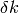 = 0.05 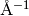. Second, the array size for
used in the Fourier transform should be a power of 2. The
default used in Larch is  = 2048. Together, these
allow data to 102.4 . Of course, real
data doesn’t extend that far, so the array to be transformed is
zero-padded to the end of the range. Since the spacing 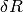
of the resulting discrete
= 2048. Together, these
allow data to 102.4 . Of course, real
data doesn’t extend that far, so the array to be transformed is
zero-padded to the end of the range. Since the spacing 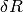
of the resulting discrete  is given as
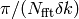, the extended range and zero-padding
will increase the density of points in , smoothly
interpolating the values. For = 2048 and
= 0.05 , the
is given as
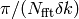, the extended range and zero-padding
will increase the density of points in , smoothly
interpolating the values. For = 2048 and
= 0.05 , the  spacing is
approximately = 0.0307
spacing is
approximately = 0.0307  .
.
For the discrete Fourier transforms with samples of at the
points 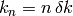, and samples of at the
points 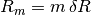, the definitions become:
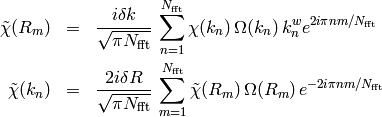
These normalizations preserve the symmetry properties of the Fourier
Transforms with conjugate variables and .
Though the reverse transform converts the complex to the
complex on the same spacing as the starting
data, we often refer to the filtered as q space.
A final complication in using Fourier transforms for XAFS is that the
measured  and are a strictly real values,
while the Fourier transform inherently treats and
as complex values. This leads to an ambiguity about how to
construct the complex 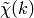. In many formal treatments,
XAFS is written as the imaginary part of a complex function. This might
lead one to assume that constructing as 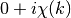 would be the natural choice. For historical reasons, Larch uses
the opposite convention, constructing as
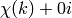. As we’ll see below, you can easily change this
convention. The effect of this choice is minor unless one is
concerned about the differences of the real and imaginary parts of
or one is intending to filter and back-transform the
and compare the filtered and unfiltered data.
and are a strictly real values,
while the Fourier transform inherently treats and
as complex values. This leads to an ambiguity about how to
construct the complex 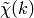. In many formal treatments,
XAFS is written as the imaginary part of a complex function. This might
lead one to assume that constructing as 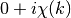 would be the natural choice. For historical reasons, Larch uses
the opposite convention, constructing as
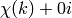. As we’ll see below, you can easily change this
convention. The effect of this choice is minor unless one is
concerned about the differences of the real and imaginary parts of
or one is intending to filter and back-transform the
and compare the filtered and unfiltered data.
 )¶
)¶The forward Fourier transform converts to
and is of primary importance for XAFS analysis. In Larch, this is
encapsulated in the xftf() function.
perform a forward XAFS Fourier transform, from to
, using common XAFS conventions.
| Parameters: |
|
|---|---|
| Returns: | None – outputs are written to supplied group. |
If a group argument is provided, the following data arrays are put into it:
attribute meaning kwin window r uniform array of chir complex array of chir_mag magnitude of chir_pha phase of chir_re real part of of chir_im imaginary part of
It is expected that the input k be a uniformly spaced array of values with spacing kstep, starting a 0. If it is not, the k and chi data will be linearly interpolated onto the proper grid.
The FT window parameters are explained in more detail in the discussion of ftwindow().
perform a forward XAFS Fourier transform, from to
, using common XAFS conventions. This version demands
chi to include any weighting and windowing, and so to represent
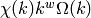 on a uniform grid. It returns
the complex array of .
| Parameters: |
|
|---|---|
| Returns: | complex |
 )¶
)¶Reverse Fourier transforms convert back to filtered
. We refer to the filtered space as 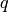 to
emphasize the distinction between the two. The filtered  is
complex. By convention, the real part of corresponds to
the explicitly real .
is
complex. By convention, the real part of corresponds to
the explicitly real .
perform a reverse XAFS Fourier transform, from to
.
| Parameters: |
|
|---|---|
| Returns: | None – outputs are written to supplied group. |
If a group argument is provided, the following data arrays are put into it:
attribute meaning rwin window 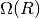 (length of input chi(R)). q uniform array of chiq complex array of . chiq_mag magnitude of . chiq_pha phase of . chiq_re real part of of . chiq_im imaginary part of .
In analogy with xftf(), it is expected that the input r be a uniformly spaced array of values starting a 0.
The input chir array can be either the complex array
as output to Group.chir from xftf(), or one of the real or
imaginary parts of the as output to Group.chir_re or
Group.chir_im.
The FT window parameters are explained in more detail in the discussion of ftwindow().
perform a reverse XAFS Fourier transform, from to
, using common XAFS conventions. This version demands
chir be the complex as created from xftf().
It returns the complex array of without putting any
values into a group.
| Parameters: |
|
|---|---|
| Returns: | complex |
As mentioned above, a Fourier transform window will smooth the resulting Fourier transformed spectrum, removing ripple and ringing in it that would result from a sudden truncation data at the end of it range. There is an extensive literature on such windows, and a lot of choices and parameters available for constructing windows. A sampling of windows is shown below.
create a Fourier transform window array.
| Parameters: |
|
|---|---|
| Returns: | 1-d window array. |
Note that if dx is specified but dx2 is not, dx2 will generally take the same value as dx.
The window type must be one of those listed in the Table of Fourier Transform Window Types.
Table of Fourier Transform Window Types
window name description hanning cosine-squared taper parzen linear taper welch quadratic taper gaussian Gaussian (normal) function window sine sine function window kaiser Kaiser-Bessel function-derived window
In general, the window arrays have a value that gradually increases from 0 up to 1 at the low-k end, may stay with a value 1 over some central portion, and then tapers down to 0 at the high-k end. The meaning of the dx and dx2, and even xmin, and xmax varies a bit for the different window types. The Hanning, Parzen, and Welch windows share a convention that the windows taper up from 0 to 1 between xmin-dx/2 and xmin+dx/2, and then taper down from 1 to 0 between xmax-dx2/2 and xmax+dx2/2.
The conventions for the Kaiser, Gaussian, and Sine window types is a bit more complicated, and is best given explicitly. In the formulas below, dx written as 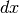 and dx2 as 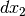. We define 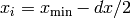, 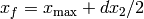, and 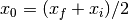, as the beginning, end, and center of the widows. For the Gaussian window, the form is:
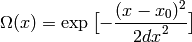
The form for the Sine window is
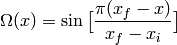
between 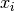 and 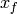, and 0 outside this range. The Kaiser-Bessel window is slightly more complicated:
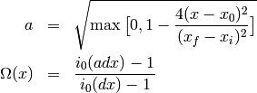
where 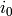 is the modified Bessel function of order 0.
Here, we give a series of example windows, to illustrate the different window types and the effect of the various parameters. The meanings of xmin, xmax, dx and dx2 are identical for the Hanning, Parzen and Welch windows, and illustrated in the two following figures.
Figure 5. Fourier Transform window examples and illustration of parameter meaning for the Hanning, Parzen, and Welch windows. Note that 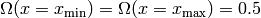, and that the meaning of dx is to control the taper over which the window changes from 0 to 1. Here, xmin=5 and xmax=15.

Figure 6. Fourier Transform window examples and illustration of parameter meaning. On the left, a comparison of Welch, Parzen, and Hanning with the same parameters is shown. On the right, the effect of dx2 is shown as a different amount of taper on the high- and low-x end of the window. As before, xmin=5 and xmax=15.

The Gaussian, Sine, and Kaiser-Bessel windows are illustrated next. These go to 1 at the average of xmin and xmax, but do not stay at 1 over a central portion of the window – they taper continuously. The Gaussian window is a simple Gaussian function, and is not truncated according to xmin and xmax, and the dx parameter sets the width. The Sine and Kaiser-Bessel windows both go to zero at xmin-dx/2 and xmax + dx/2. For very large values of dx, the Kaiser-Bessel window approaches a nearly Gaussian lineshape.
Figure 7. Fourier Transform windows. On the left, a comparison of Kaiser-Bessel, Sine, and Gaussian windows with the same parameters is shown. On the right, the effect of dx is shown for the Kaiser-Bessel window, and a closer comparison to a Gaussian window is made.

Now we show some example Fourier transforms, illustrating the real and
imaginary parts of the as well as the magnitude, the effect
of different windows types, and Fourier filtering to . We
use a single XAFS dataset from FeO for all these examples, with a
well-separated first and second shell. The full scripts to generate the
figures shown here are included in the examples/xafs/ folder.
We start with a comparison of a small value of dk and a larger value. A script that runs xftf(), changing on dk would look like:
xftf(dat1.k, dat1.chi, kmin=3, kmax=13, dk=1, window='hanning',
kweight=kweight, group=dat1)
dat2 = group(k=dat1.k, chi=dat1.chi) # make a copy of the group
xftf(dat2.k, dat2.chi, kmin=3, kmax=13, dk=5, window='hanning',
kweight=kweight, group=dat2)
would result in the following results:


Figure 8. Comparison of the effect of different values of dk on real XAFS Fourier transforms. Increasing dk reduces peak heights and tends to broaden peaks, but the effects are rather small.
A script that runs xftf() with consistent parameters, but different window types:
xftf(dat1.k, dat1.chi, kmin=3, kmax=13, dk=4, window='hanning',
kweight=kweight, group=dat1)
dat2 = group(k=dat1.k, chi=dat1.chi) # make a copy of the group
xftf(dat2.k, dat2.chi, kmin=3, kmax=13, dk=4, window='parzen',
kweight=kweight, group=dat2)
dat3 = group(k=dat1.k, chi=dat1.chi) #
xftf(dat3.k, dat3.chi, kmin=3, kmax=13, dk=4, window='welch',
kweight=kweight, group=dat3)
dat4 = group(k=dat1.k, chi=dat1.chi) #
xftf(dat4.k, dat4.chi, kmin=3, kmax=13, dk=4, window='kaiser',
kweight=kweight, group=dat4)
dat5 = group(k=dat1.k, chi=dat1.chi) #
xftf(dat5.k, dat5.chi, kmin=3, kmax=13, dk=4, window='gaussian',
kweight=kweight, group=dat5)
would result in the following results:


Figure 9. Comparison of the effect of different window types on real XAFS Fourier transforms.
We now turn our attention to the different components of the Fourier
transform. As above, it is most common to plot the magnitude of the
Fourier transform. But, as the transformed is complex, it
can be instructive to plot the real and imaginary components, as shown
below:
newplot(dat1.r, dat1.chir_mag, xmax=8, label='chir_mag',
show_legend=True, legend_loc='ur', color='black',
xlabel=r'$R \rm\, (\AA)$', ylabel=r'$\chi(R)\rm\,(\AA^{-3})$' )
plot(dat1.r, dat1.chir_re, color='red', label='chir_re')
plot(dat1.r, dat1.chir_im, color='blue', label='chir_im')
which results in

Figure 10. The real and imaginary components of the XAFS Fourier transform.
In fact, in the analysis discussed with feffit(), the real and imaginary components are used, not simply the magnitude.
A reverse Fourier transform will convert data from to
. This allows a limited range of frequencies (distances) to
be isolated and turned back into a spectrum. Here, we show
two different windows to filter either just the first shell of
the spectra, or the first two shells, and compare the resulting filtered
.


Figure 11. Reverse XAFS Fourier transform, or Fourier filtering. Here, one can see the effect of different window sizes on the Fourier filtered spectrum. Including the first two peaks or shells reproduces most of the original spectrum, with only high-frequency components removed.
Note that it is chiq_re that is compared to the k-weighted chi array.

 (0.05).
(0.05).